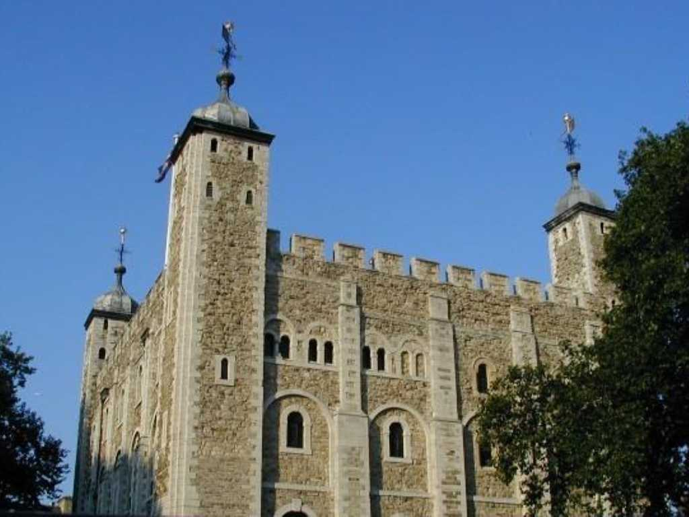
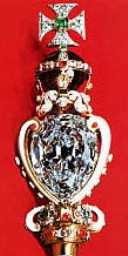
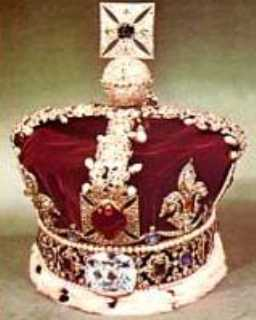

August 1973 Tower of London
１０７８年古代ローマ人の城砦跡にイングランドを征服したウィリアム一世の手によって築かれ歴代の王が増築し現在の姿になった

The Great Star of Africa Royal Scepter
世界最大のカットダイヤモンドで有名 530,2ct The Callinan Diamond と言われる原石は１９０５年南アフリカのプレミア鉱山で産出され３,１０６ctあった この原石を９個の大きい石と９６個の小さい石にカットしたもので世界で２番目に大きなカットダイヤモンドは大英帝国王冠に使用され317.4ctある

Imperial State Crown of Great Britain